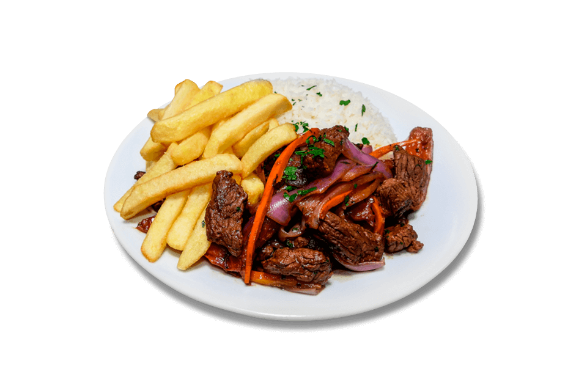

Lomo Saltado
El lomo saltado es un plato peruano de influencia china, que surgió en Lima a finales del siglo XIX, como resultado de la fusión entre la cocina criolla y la técnica del salteado traída por los inmigrantes chinos.
Ingredientes: Lomo de res, cebolla roja, tomate, ají amarillo, salsa de soja (sillao), vinagre, papas fritas, arroz blanco, aceite y perejil.
Preparación: Se saltean en un wok o sartén a fuego alto los trozos de lomo de res con aceite caliente. Luego, se añaden cebolla, tomate y ají amarillo, agregando sillao y vinagre para dar sabor. Una vez todo bien integrado, se sirve acompañado de papas fritas y arroz blanco.